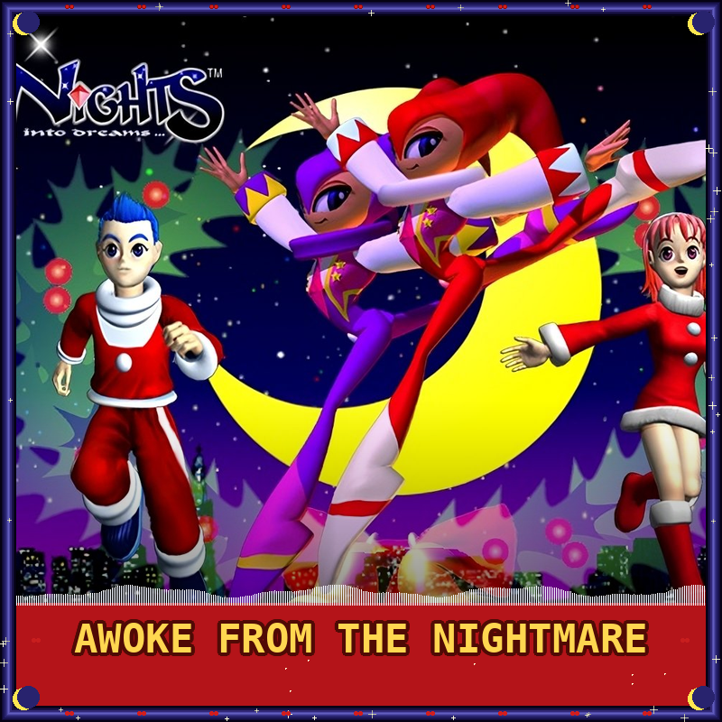
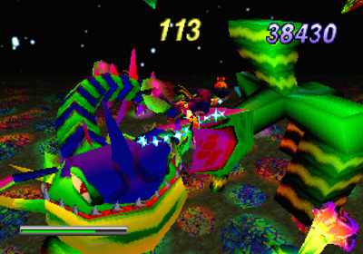
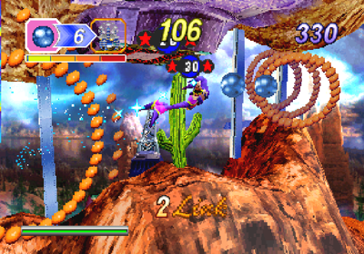
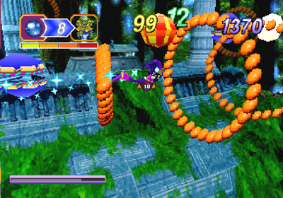
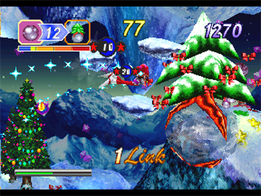

NiGHTS & Christmas NiGHTS
A dreamlike flying action game from Sonic Team where teenagers Elliot and Claris enter the world of Nightopia and merge with NiGHTS to battle Wizeman. Features fluid 3D flight along 2D paths through whimsical, real-time rendered environments. You can fly through waterfalls, soar through tree branches, and bobsled down icy slopes. The flight mechanics and freedom were revolutionary for the time, creating a captivating score-chasing experience.
.png)
| Platform | Sega Saturn |
|---|---|
| Genre | Action / Flying |
| Released | |
| Developer | Sonic Team |
| Publisher | Sega |
| Available | Saturn, PS3, X360, PC |
Where to Play
About This Game
NiGHTS into Dreams was developed by Sonic Team and released for the Sega Saturn in 1996. Directed by Takashi Iizuka and produced by Yuji Naka, the game was born from the team's desire to create a flying experience that captured the freedom and wonder of lucid dreaming. Players control NiGHTS, a jester-like "Nightmaren" who has rebelled against the evil Wizeman, soaring through dreamscapes while collecting orbs and performing aerial acrobatics. The game was designed around the Saturn's analog controller—the 3D Control Pad was bundled with NiGHTS and became the console's signature peripheral.
Christmas NiGHTS into Dreams was a separate promotional disc distributed through magazines, demo kiosks, and retail bundles during the 1996 holiday season. It featured a remixed version of the Spring Valley stage with Christmas theming that changed based on the Saturn's internal clock—playing on December 25th triggered unique events, and other holidays throughout the year each had their own surprises. Together, NiGHTS and Christmas NiGHTS represent some of the Saturn's finest moments, showcasing a level of artistic vision and technical achievement that helped define Sega's identity during the 32-bit era.
Did You Know?
- NiGHTS was Sonic Team's dream project — Producer Yuji Naka and designer Takashi Iizuka wanted to capture the feeling of flight and freedom. They believed flying was the purest form of freedom in gaming and designed NiGHTS around that concept once the Saturn's 3D hardware made it possible.
- The 3D Control Pad was built for this game — Sega developed the Saturn's analog controller specifically for NiGHTS and bundled it with the game. It launched in Japan on July 5, 1996 — just days after Nintendo's own analog stick debuted with the N64 on June 23 — making the two rival consoles' analog solutions near-simultaneous.
- Christmas NiGHTS changes with the calendar — The promotional disc reads the Saturn's internal clock and alters its content based on the date. Playing on April 1st replaces NiGHTS with Reala, New Year's Day triggers fireworks, and the game has unique events for over a dozen calendar dates throughout the year.
- The A-Life system was ahead of its time — NiGHTS featured an artificial life ecosystem called "A-Life" where small creatures called Nightopians evolved based on the player's actions. Their mood and behavior affected the background music in real time, creating a dynamic soundtrack experience.
Critical Reception
Accolades
- #1 Sega Saturn Game of All Time — Retro Gamer, 2008
- #100 Greatest Games of All Time — Edge Magazine, 2007
- 89/100 Aggregate score — GameRankings
Club Achievements

Beat the Game
GoldOther Participants
No participants yet.
Speedrun Records
NiGHTS into Dreams speedruns focus on optimizing flight paths and link chains to achieve the fastest possible boss rush times, turning the game's score-attack design into a test of pure routing precision.
Soundtrack
Composed by Naofumi Hataya, Tomoko Sasaki & Fumie Kumatani
The NiGHTS soundtrack blends jazz fusion, pop, and orchestral arrangements to mirror the game's dreamlike atmosphere. Naofumi Hataya's compositions shift seamlessly between upbeat flying themes and ethereal ambient pieces, with Tomoko Sasaki contributing the vocal tracks "Dreams Dreams" and "Message from Nightopia" — songs that have become iconic in Sega's musical catalog.
Notable Tracks
- Dreams Dreams (Theme Song)
- Gate of Your Dream
- Paternal Horn
- The Amazing Water
- Suburban Museum
- Message from Nightopia
Screenshots




Screenshots via LaunchBox Games Database
Sources & Attribution
- Game description and historical background adapted from Wikipedia
- Trivia sourced from Sega Retro, developer interviews, and The Cutting Room Floor
- Review scores from Next Generation Magazine, Sega Saturn Magazine, and GameFan
- Accolades from Retro Gamer and Edge Magazine
- Speedrun data from Speedrun.com
- Playtime estimates from HowLongToBeat
- Screenshots and box art via LaunchBox Games Database
- Soundtrack information from KHInsider
- Pricing data from PriceCharting and Steam